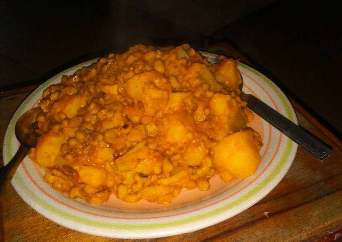
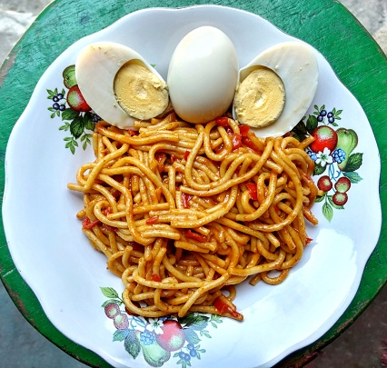

Rice and Potatoes

This is porridge beans with potatoes, my favourite dish
porridge beans and potatoes is one of the the most nutritious meal that is right on all the six classes of food
It can easisly be made by anyone not to mention the ingredients for the meal wouldn't eat deep into your pocket
Ingredients
- Beans
- Potatoes
- Red oil
- Maggi
- Salt
- Tomatoes Sauce
- Pepper
- Onions
Steps
- Put Beans on fire
- Parboiled the beans after 10 minutes to remove chemicals used in preserving them
- After an hour or so, when the beans has become soft...
- Add potatoes(after peeling) to the beans
- Use a separate pot to fry the tomotoes, afterwards add onions, pepper, salt, maggi to the sauce
- Then add the prepared sauce to the beans and potatoes
- Wait for 20 minutes
- There you go, your yummy and delicious food is ready
Spaghetti with cooked eggs

One of the most irrestible food you can ever imagine, Spaghetti with cooked eggs
This is one of those foods you wish you can eat everyday, it is highly nutritious and can be cooked very fast
If you are one of those people who really don't have much time on their hands, this should be your go to meal
Ingredients
- Spaghetti
- Eggs
- Tomato sauce
- Pepper
- Maggi
- Salt
- Onions
- Curry
- Groundnut oil
Steps
- Put water on fire
- Put the Spaghetti singlely on the pot, do not break it. This will allow the Spaghetti to standout and not joined together
- After a few minutes, parboiled the Spaghetti
- Use the opportunity to steam the Groundnut oil, add the other ingredients into the oil
- boil the eggs in a separate pot
- Add the steamed ingredients into the parboiled Spaghetti
- After about 10 minutes, your tasty Spaghetti is ready
- Served together with the cooked eggs
Jollof Rice

This is one of the most popular food in the country, infact it can be said that one is not fully a Nigerian if you have never tasted this food
Welcome to the world of Jollof rice
Ingredients
- Rice
- Tomato sauce
- Maggi
- Salt
- Pepper
- Curry
- Onions
- Groundnut oil
Steps
- Put Rice in fire
- Parboiled after some minutes
- fry the tomato sauce in hot(steamy) groundnut oil, add the other ingredients when with frying
- Put all the fryed ingredients into the rice
- Do not steer the food when you put the ingredients into the rice
- after a few minutes, your jollof rice is ready
- you can the food with chicken or eggs